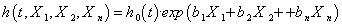
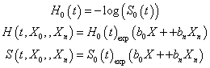

About Cox Regression
Cox Regression is a part of Survival Analysis that studies the impact of potential risk factors, or covariates, on the survival time of a population. (The risk factors are also often called predictors or explanatory variables.)
Consider the possible effects of gender, age, and two types of drug therapy on the survival of a population suffering from some form of cancer. The survival time may decrease as age increases. Death rates among males may be higher than for females. Finally, drug A may increase survival time more than drug B. In this study, Gender, Age, and Drug Therapy are the covariates that affect the survival experience. In Cox Regression defines the model that describes the relationship between the covariates and survival time. This model helps to predict the likelihood of survival at each point in time for any values of the covariates. It also allows us to determine the significant effect of each covariate.
There are two types of covariates. The above covariates, Gender and Drug Therapy, each have two categories of non-numeric values and are called categorical covariates. Since the covariate Age can assume a continuous range of numeric values, it is called a continuous covariate. Frequently, a categorical covariate has numeric values assigned to its categories, but these values are only used for naming purposes and are not used to indicate a measurement.
The simplest way to visualize the effect of covariates on survival time is to construct a survival curve. A survival curve plots the relationship between each value of time and the probability of surviving beyond that value. This relationship is called the survival function (or survivorship function). In Kaplan-Meier survival analysis, one survival function is defined that is independent of any covariates. In Cox survival analysis, specific values for each of the covariates lead to one estimated survival function for the population. The graph of such a function is called a covariate-adjusted survival curve.
In Cox Regression, the primary object of study is the hazard function of the population, as estimated from the sampled survival data. This function is closely related to the survival function. The hazard function (sometimes known as the conditional failure rate, hazard rate, or just the hazard) is defined as the instantaneous rate of change in the likelihood of failure at each point in time, given survival up to that point. As an example, suppose h is the hazard function and suppose h(t) = .1 at some time t, then an interpretation of this value is that there is approximately a 10% chance that a subject will fail within the next unit time period, given the subject has survived up to time t. Another function, the cumulative hazard function, is defined at each value of time as the integral of the hazard over all previous values of time. It provides a smoothed alternative to the hazard function as estimates of the hazard function itself can be too “noisy” for practical use. If H denotes the cumulative hazard function, then the above definitions can be used to show that the survival function S is defined at each time t by: S(t)=exp(—H(t))
All of the functions discussed above are not only functions of time, but also depend upon the covariates in the survival study. In the Cox model, the hazard function assumes a specific form given by:  where X1, X2, . . ., Xn are the covariates in the study. The function h0 is called the baseline hazard function and only depends upon time. The exponential factor on the right-hand side of the equation involves the covariates, but does not depend on time. In our implementation of Cox Regression, we are assuming that every covariate is time-independent and so its value for each subject remains constant over time (it is possible, however, to extend Cox Regression to include time-dependent covariates).

Our model of the hazard function shows that if there are two specifications for the values of the covariates, then the corresponding values of the hazards are proportional over time. This is the reason the Cox model is called a proportional hazards model. It is possible that a potential covariate for the model does not satisfy this assumption. For example, suppose we have the covariate Gender in a survival study. If males are dying at twice the rate of females during the first month of a study, and both genders die at the same rate during the next month of the study, then the ratio of the hazards, or the hazard ratio, for males to females is not constant over time and the proportionality assumption fails. Such a covariate cannot be included in the hazard model.
A covariate may also be omitted from the model because its value is based on the design of the study and has secondary importance as a risk factor for survival. For example, when a study is performed at two different clinics to determine the impact of age and drug therapy on patient recovery, then the variable Clinic is such a covariate.
Any variable whose values have been included in the survival data but is not included as a covariate in the hazard model for the reasons described above is called a stratification variable. Each value or level of such a variable is called a stratum; collectively, the levels are the strata. When a stratification variable is present, then the survival study is partitioned into groups, one for each stratum, where each group has its own survival function that is determined from the regression analysis. The best-fit coefficients are the same for each stratum, but the baseline time-dependent factors in the model are different.